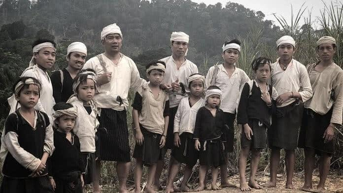

1. Sejarah Singkat Suku Baduy
Suku Baduy nyaéta suku asli Indonésia anu cicing di Pagunungan Kendeng, Desa Kanekes, Leuwidamar, Kabupaten Lebak, Provinsi Banten. Teu aya catetan pasti ngeunaan iraha suku ieu mimiti aya, tapi dipercaya yén Suku Baduy mangrupa turunan ti masarakat Sunda Kuna anu tetep ngajaga budaya sarta hirup mandiri tanpa pangaruh modérn.
Suku Baduy dipercaya masih kénéh nyepeng ajaran Sunda Wiwitan, hiji sistem kapercayaan kuna anu ngagabungkeun animisme, dinamisme, sarta unsur monoteisme kalayan meyakini ayana kekuatan spiritual utama, Sang Hyang Kersa. Masyarakat Baduy terus ngajaga warisan budaya maranéhanana ku cara hirup mandiri, jauh tina modérnisasi jeung pangaruh luar.
2. Lokasi Kampung Adat Baduy
Suku Baduy hirup di wewengkon Pegunungan Kendeng, Desa Kanekes, Leuwidamar, Kabupaten Lebak, Banten. Kampung ieu bisa dicangking ti Rangkasbitung ku jalur darat sakitar 2-3 jam perjalanan. Rute utama ka wilayah Baduy nyaéta ti Stasiun Rangkasbitung, lajeng neruskeun perjalanan ku mobil atanapi ojeg ka Ciboleger, anu janten gerbang utama ka wilayah Baduy.
Sanggeus nepi di Ciboleger, wisatawan biasana kudu leumpang sababaraha kilometer pikeun asup ka perkampungan Baduy Luar. Sedengkeun pikeun nu hayang nganjang ka Baduy Dalam, perjalanan bakal leuwih jauh sarta nyandak waktos sakitar 4-5 jam trekking ngalangkungan leuweung jeung gunung.
3. Struktur Organisasi Kampung Adat Baduy
Suku Baduy mibanda struktur organisasi anu tradisional sarta berlandaskan adat tur spiritual. Ieu di handap susunan organisasi Kampung Adat Baduy:
- Pu'un – Pamingpin pangluhurna anu mibanda kawenangan utama dina kapamimpinan adat.
- Jaro – Pembantu Pu’un anu tanggung jawab kana urusan sapopoé.
- Lebak – Lurah anu ngawasi kaamanan sareng tata administrasi masarakat.
- Kokolot – Pamimpin spiritual anu nanggung jawab kana upacara adat.
- Bareng – Golongan masyarakat anu ngabantu dina urusan sosial, ékonomi, jeung gotong-royong.
4. Perbedaan Baduy Dalam jeung Baduy Luar
Baduy Dalam: Masih kénéh ngajaga adat istiadat kalayan ketat, henteu ngagunakeun listrik, sabun, atawa alat modern.
Baduy Luar: Mimitian adaptasi jeung budaya luar, sapertos ngagunakeun barang éléktronik jeung sabun mandi.
5. Aturan Adat Suku Baduy
- Dilarang memakai kendaraan – Warga Baduy tidak diperbolehkan menggunakan kendaraan bermotor.
- Dilarang menggunakan barang elektronik – Terutama untuk Baduy Dalam.
- Pernikahan sesama Baduy – Dilarang menikah dengan orang luar, kecuali jika orang luar tersebut ingin masuk ke dalam komunitas Baduy.
- Dilarang berobat ke dokter – Menggunakan obat tradisional untuk segala jenis penyakit.
- Tidak mengenyam pendidikan formal – Masyarakat Baduy tidak bersekolah karena dianggap bertentangan dengan adat.
- Pantangan membangun rumah dengan paku – Semua rumah dibangun dari kayu dan diikat dengan akar.
- Tidak boleh bekerja di luar komunitas – Warga Baduy tidak diperbolehkan bekerja di kota atau industri modern.
6. Upacara Adat Baduy
- Seba – Upacara rasa syukur kana hasil panén, warga Baduy masrahkeun hasil bumi ka pamaréntah Banten.
- Kawalu – Puasa jeung ritual panen anu dilaksanakeun salila tilu bulan.
- Ngalaksa – Silaturahmi antar warga ku cara bagé-bagé hasil panén.
- Nyacar/Nukuh – Ritual ngabersihan lahan pikeun tatanén.
- Ngahuru – Ritual ngabakar ranting jeung daun saatos beres nyacar.
7. Kepercayaan Sunda Wiwitan
Suku Baduy menganut Sunda Wiwitan, agama karuhun anu percaya ka Sang Hyang Kersa (Gusti Nu Maha Suci). Maranéhanana yakin yén alam mibanda unsur spiritual anu kudu dijaga ku harmoni. Sunda Wiwitan henteu ngan ukur kapercayaan, tapi ogé gaya hirup anu ngajarkeun hirup sauyunan jeung alam.
8. Rumah Adat Baduy (Imah Baduy)
Imah Baduy disebut Sulah Nyanda, wangunana imah panggung tina kai, tanpa jandéla, sarta hateupna tina daun ijuk atawa kalapa. Struktur na disaluyukeun jeung kontur taneuh pikeun ngajaga harmoni jeung alam. Wangunan ieu diwangun ku cara gotong royong ku masarakat Baduy, sarta henteu nganggo bahan-bahan modérn sapertos paku atawa semen.
Ada tilu bagian utama dina imah adat Baduy:
- Sosoro – Bagian hareup pikeun tamu jeung tempat ngaso.
- Tepas – Bagian tengah pikeun sare jeung musyawarah kulawarga.
- Imah – Bagian tukang minangka dapur jeung kamar nu boga imah.